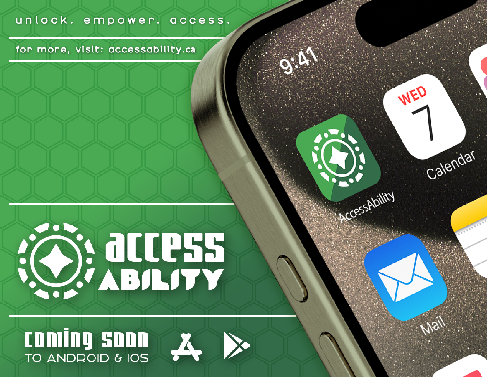
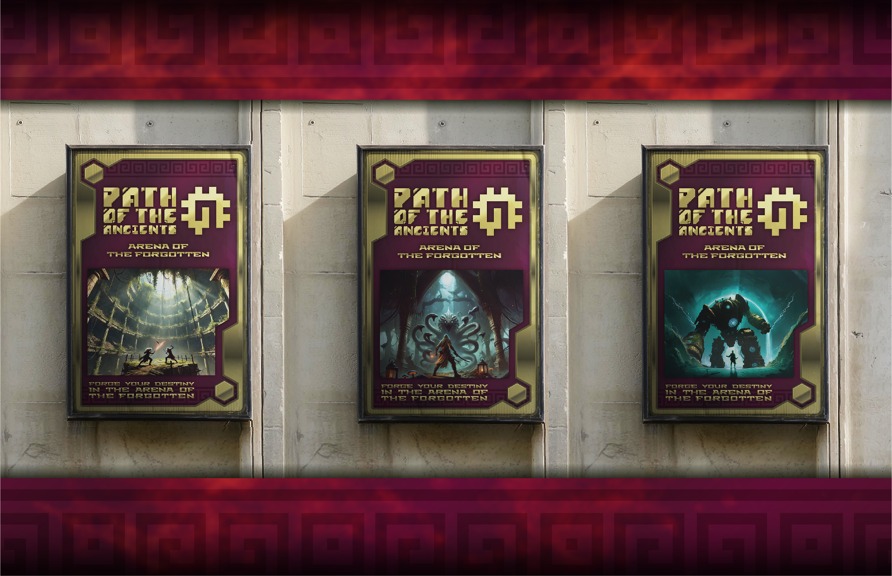
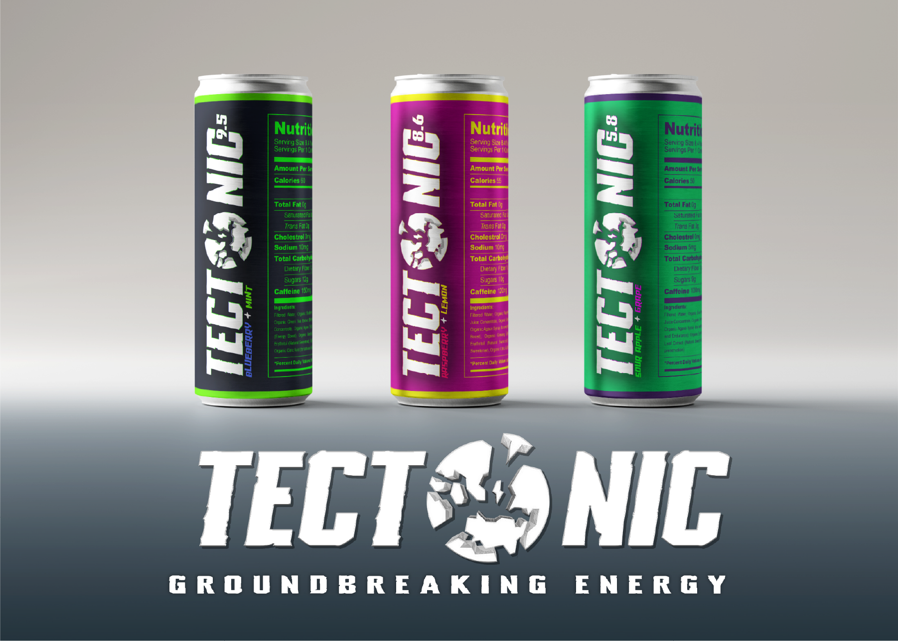

Overview
Access Ability
Overview
An innovative accessibility-focused project designed to foster inclusive, user-friendly environments across digital and physical platforms.
Inspiration
Rooted in a commitment to human-centered design, learn how Access Ability harnesses colour theory, inclusive technology, and gestalt principles.
Path of the Ancients
Overview
A deeply emotional, lore-rich roguelike card game that explores themes of resilience, transformation, and balance through powerful narrative storytelling.
Concept & Design
Discover the world-building, character development, and unique mechanics that define this immersive gaming experience.
The Unified Science of Colour
Overview

An infographic-driven exploration of colour, blending scientific accuracy with artistic expression across multiple disciplines.
Educational Impact
Learn how scientific understanding can enhance artistic practice through accessible, visually engaging educational content.
TecTonic
Overview
A groundbreaking energy drink blending bold design, vibrant flavours, and neuroprotective ingredients to support health-conscious consumers.
Brand & Vision
Explore the inspiration behind TecTonic's seismic branding and unique market positioning.

Nulltech Apparel
Overview

A personal clothing and merchandise brand embodying transformation and innovation through symbolic and contemporary designs.
Brand Ethos
Discover how Nulltech Apparel merges symbolism, style, and sustainability in its product offerings.